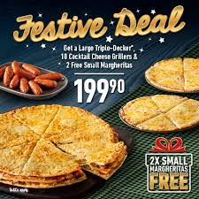
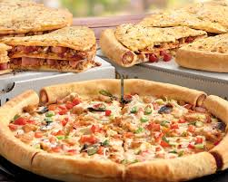
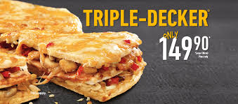

DEBONAIRS

Debonairs Pizza is a South African based pizza restaurant chain franchise founded in 1991 by Craig McKenzie and Andrew Harvey. McKenzie came up with the idea and business model to found the company following a gap-year trip to Los Angeles when he was a student at the University of KwaZulu-Natal.[2] The first restaurants were established in Pietermaritzburg, followed by Umhlanga and then Durban. The chain expanded rapidly and was acquired by Famous Brands in 1999.[4] The company has over 500 restaurants[3] in 13 countries mostly located in Africa including Botswana, Dubai, Kenya, Lesotho, Malawi, Mauritius, Mozambique, Namibia, Nigeria, South Africa, Sudan, Swaziland, and Zambia.[5] The majority of its 546 (2018) restaurants are located in South Africa with 462 restaurants in the country. As of 2018 Debonair Pizza was the largest pizza chain restaurant in South Africa.[6]
  